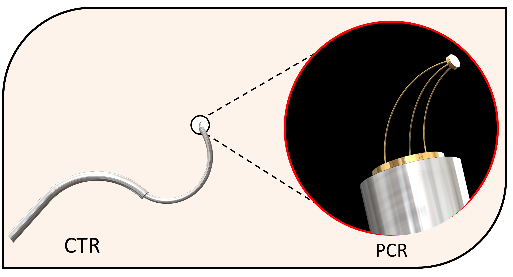

parallel continuum robot made of glass
The Dance of innovation: A New Frontier in Microrobotics

In the dim glow of an operating room, the future is quietly unfolding. Picture this: a robot, no larger than your hand, perched delicately at the tip of a laparoscopic tool. It’s not here to navigate—oh no—it has a more elegant task. With three legs of impossibly thin glass fibers, it is built for finesse, for a dance of dexterity that surgeons could only dream of before. This miniaturized parallel continuum robot, made of optical fiber, promises a revolution at the microscopic scale. Its flexible links allow it to twist, tilt, and extend, moving with a grace that rivals even nature's most delicate creatures. Imagine this tiny wonder at the end of a surgical instrument, where space is tight and angles are everything. As the fibers bend and flex, the robot manipulates tissues, sutures wounds, and delivers targeted treatments, all while maintaining unparalleled control. One of these fibers can even carry a laser, firing with pinpoint accuracy to excise or cauterize tissue, reducing damage to surrounding areas. It's as if science has summoned a symphony of glass and light to heal the human body.
The Elegance of Micro-Robotics: Redefining the Possible
The inspiration behind the three-legged configuration of this innovative design traces its roots to the renowned MilliDelta, a micro-scale parallel robot known for its precision and speed. However, conventional micro parallel robots, including the MilliDelta, are inherently limited to only translational movements, restricting their versatility in intricate applications. To break these limitations and push the boundaries of micro-robotics, we engineered a revolutionary miniaturized parallel continuum robot—a design that seamlessly integrates the advantages of parallel mechanisms with continuum structures. This cutting-edge system introduces an extraordinary ability to achieve large rotational movements of about ±90°, an unprecedented feature in such a compact robotic structure. This breakthrough not only allows the robot to operate within a vast workspace while maintaining a small volume, but it also opens new frontiers in micro-manipulation, biomedical applications, and precision assembly. By leveraging the power of continuum robotics, this innovation paves the way for more dexterous, flexible, and adaptive robotic solutions in fields that demand unparalleled agility at a microscopic scale.
 This project involves pushing the boundaries of material science, robotics, and biomedical innovation to bring forth this miniature powerhouse. The robot whispers a future where surgeons can operate without limits, where scientists can explore the unseen, and where the smallest machine can hold the greatest potential.
At the heart of this robot lies a secret—a backbone made of glass optical fibers. These fibers, seemingly fragile yet astonishingly resilient, hold the power to shape this robotic marvel. Their flexibility is the source of its dexterity. Their structure allows energy to flow—not only through mechanical movement but also in the form of light.
This project involves pushing the boundaries of material science, robotics, and biomedical innovation to bring forth this miniature powerhouse. The robot whispers a future where surgeons can operate without limits, where scientists can explore the unseen, and where the smallest machine can hold the greatest potential.
At the heart of this robot lies a secret—a backbone made of glass optical fibers. These fibers, seemingly fragile yet astonishingly resilient, hold the power to shape this robotic marvel. Their flexibility is the source of its dexterity. Their structure allows energy to flow—not only through mechanical movement but also in the form of light.
Theoritical Analysis and results

Experimental validation and results

In conclusion
The glass optical fiber robot is more than technology—it’s a dream realized. It invites us to imagine what more might be possible when we work with materials that bend, reflect, and illuminate the world around us. From surgery rooms to laboratories, this tiny robot carries within it the promise of a future where precision is boundless and the impossible becomes commonplace.Click for the published article